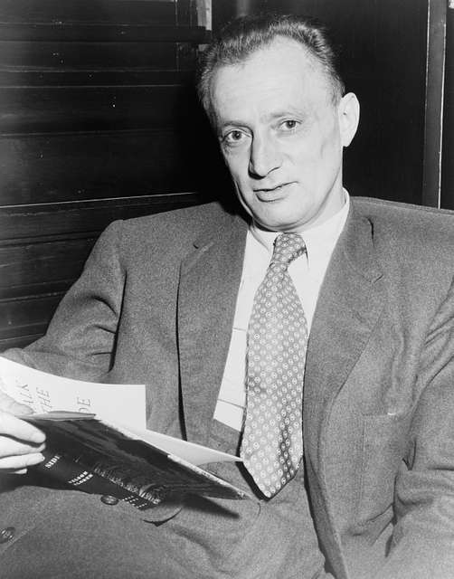

을유 시리즈
-
 책을 쓰는 과학자들
책을 쓰는 과학자들#5. “새들은 다 어디로 갔을까?”
『과학혁명의 구조』가 학계에 큰 영향을 주었다면, 같은 해에 출간된 또 다른 책은 전 세계에 더욱 막대한 영향력을 떨치고 대중에게 비교적 생소한 과학적 탐구 주제였던 환경주의를 소개했다. 같은 해에 출간된 또 다른 책은 전 세계에 더욱 막대한 영향력을 떨치고 대중에게 비교적 생소한 과학적 탐구 주제였던 환경주의를 소개했다.
-
게르하르트 리히터
#5. “아름다운 행운의 빛” 컬러패널
『과학혁명의 구조』가 학계에 큰 영향을 주었다면, 같은 해에 출간된 또 다른 책은 전 세계에 더욱 막대한 영향력을 떨치고 대중에게 비교적 생소한 과학적 탐구 주제였던 환경주의를 소개했다. 같은 해에 출간된 또 다른 책은 전 세계에 더욱 막대한 영향력을 떨치고 대중에게 비교적 생소한 과학적 탐구 주제였던 환경주의를 소개했다.
-
나이 든다는 것에 관하여
#5. 내려놓고 있는 그대로 받아들이기
내려놓는 것은 이별하는 마음으로 살아가는 삶에서 중요한 주제다. 예전이었다면 극복할 수 있었거나 지나치게 과했던 우리 자신을 향한 요구 사항들을 이제는 감당할 수 없게 되었다. 이러한 것들을 가벼운 마음으로, 어쩌면 아쉬운 마음으로 내려놓아야 한다. 일상생활의 측면에서 볼 때 내려놓기라는 주제는 신체의 활동성을 통해 쉽게 확인할 수 있다. 이를테면 짐이 너무 무거워지면 내려놓아야 한다. 너무 힘들고 지치면 내려놓아야 한다. 또한 자신이 여전히 무엇이든지 할 수 있고 예전의 자신과 다를 바 없으며, 도움이 필요하지 않고 의존적이지 않다는 자아상도 내려놓아야 한다. 기존의 자아상과는 작별을 고해야 하며, 새로운 자아상을 통해 삶을 다시 새롭게 살아 나갈 수 있다.
-
연애편지
#5. 보부아르가 보낸 마지막 편지
매우 소중한 당신. 어떤 편지도 부치지 않고, 어떤 편지도 오지 않는 영원 같은 시간이 흘렀어요. 당신에 관한 몇 가지 소식이 새어 들어왔어요. 당신이 『더 네이션』에 쓴 〈폴라무르 박사〉의 시나리오 작가(그의 이름을 잊어버렸어요)에 대한 훌륭한 글과, 또 어떤 잡지에서였는지 기억나지 않지만 여인들과 사랑, 결혼 등에 관해 나눈 흥미진진한 인터뷰들이요. 알랭인가, 세르주인가가 당신이 매우 고상한 의상을 걸치고 다닌다고 일러 주던데, 정말 당신이 맞아요?